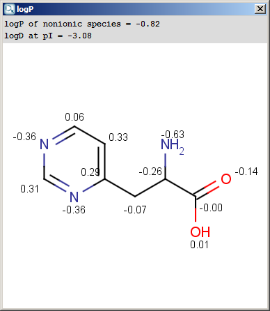
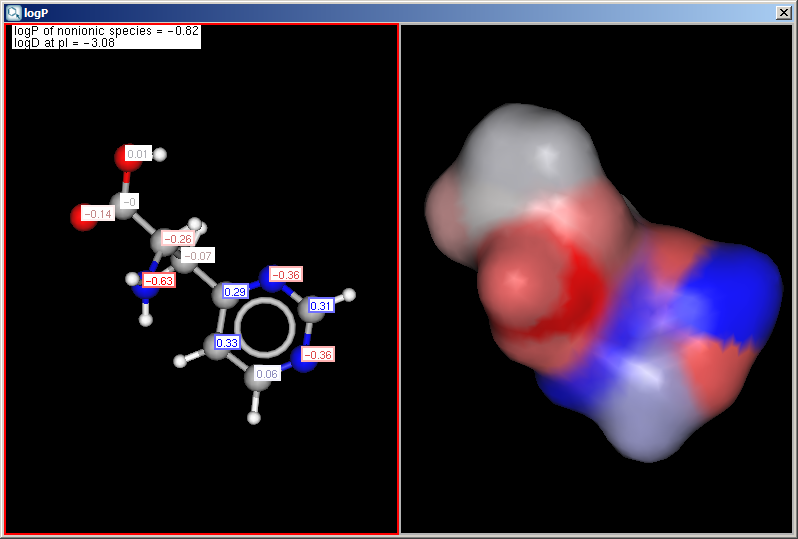

Partitioning
logP Plugin
The logP plugin calculates the octanol/water partition
coefficient, which is used in QSAR analysis and rational drug design as
a measure of molecular hydrophobicity. The calculation method is based
on the publication of Viswanadhan et al. (see Ref.1.)
The logP value of a molecule is composed of the increment values
of its atoms. The algorithm described in the paper was modified at
several points. Many atomic types were redefined to accommodate electron
delocalization. Contributions of ionic forms were added. The logP value
of zwitterions are calculated from the logD value at the isoelectric
point. The effect of hydrogen bonds on logP is considered if there is a
chance to form a six membered ring between suitable donor and acceptor
atoms. New atom types were introduced especially for sulfur, carbon,
nitrogen, and metal atoms.
Learn more about how the plugin calculates
logP and how a user defined set
is used in the calculations.
We introduced the trainable logP calculation in version 5.1.3.
What does trainability mean? With this new feature you can teach our program, how it should calculate the
logP values of structures in your compound library. Experimental data and
the molecules are saved into a file which is used in the calculation if user
defined method is selected.
Read how you can
benefit from the user defined method
used in the calculations. Technical
details about setting up.
Different calculation parameters can be set in the logP Options panel:
General Options
- Method
- VG: the calculation method derived from Reference 1. is applied (VG stands for Viswanadhan and Ghose, first authors of the cited paper).
- KLOP: logP data from Klopman's paper is applied.
- PHYSPROP: logP data from PHYSPROP© database is used.
- User defined: if a training set of structures and corresponding experimental logP values is created by the user, and stored in the appropriate format, it can be used as a database for related molecules' logP calculations. See this document about creating such sets.
- Weighted: default setting. The use of methods can be melted by the user, selecting this method turns the Method weights section active.
- Training ID: if the User defined or the Weighted method is selected, this dropdown list becomes active. All created training sets are listed here. Choose the one to apply for the calculation. Read more on creating a training set.
- Method weights: you can set the proportion of the methods used in the calculations. Acitve only in Weighted method.
- Electrolyte concentration
- Cl- concentration: can be set between 0.1 and 0.25 mol/L.
- Na+ K+ concentration: can be set between 0.1 and 0.25 mol/L.
- Take major tautomeric form: the logP of the major tautomer will be calcutated.
Display Options
- Precision: setting the number of decimal places with which the result value is given.
- Show value
- increments: calculates the increments given by the atoms.
- logP: calculates the value of logP
- Increments of hydrogens: displays the increments given by hydrogens (in brackets).
- Display in MarvinSpace: the result window opens as 3D MarvinSpace viewer. If unchecked, the results will be shown on a 2D picture.
Notes to Method and Method Weights: These logP methods were developed by us based
partly on the atom types given in Reference 1.. The three abbrevations only refer
to the appropiate training logP data set according to the references 1, 2 and 3.
Weighted method is a combination of the above three logP calclulations. The three methods are equally weighted
(1/3) by the default setting. The calculated logP in this way will be the
arithmetic average of the three methods. The weighted method usually provides more
reliable logP value than any one of the three separate methods.
The result of the calculation appears in a new window, either in a MarvinView (2D) window or a MarvinSpace (3D) window:


The result window shows the logP increments for each atom. The
numbers in brackets refer to the logP increment sums of implicit
H atoms, and displayed only if the "Increment of Hs" option is switched on
in the logP Options panel.
logD Plugin
Compounds having ionizable groups exist in solution as a mixture
of different ionic forms. The ionization of those groups, thus the ratio
of the ionic forms depends on the pH. Since logP describes the
hydrophobicity of one form only, the apparent logP value can be
different. The octanol-water distribution coefficient,
logD represents the compounds at any pH value (see Ref. 3.).
Learn more about how the plugin calculates
logD.
Different calculation parameters can be set in the logD Options panel:
General Options
- logP Method
- VG: the calculation method derived from Reference 1.
is applied (VG stands for Viswanadhan and Ghose, first authors of the cited paper).
- KLOP: logP data from Klopman's paper
is applied.
- PHYSPROP: logP data from PHYSPROP©
database is used.
- User defined: if a training set of structures and corresponding experimental logP
values is created by the user, and stored in the appropriate format, it can
be used as a database for related molecules' logP calculations. See this
document about creating such sets.
- Weighted: default setting. The use of methods can be melted by the user, selecting
this method turns the Method weights section active.
- LogP Training ID: if the User defined or the Weighted method is selected, this dropdown list becomes active. All created training sets are listed here. Choose the one to apply for the calculation. Read more on creating a training set.
- Method weights: you can set the proportion of the methods used in the calculations. Acitve only in Weighted method.
- Electrolyte concentration
- Cl- concentration: can be set between 0.1 and 0.25 mol/L.
- Na+ K+ concentration: can be set between 0.1 and 0.25 mol/L.
- pKa correction library: the custom pKa training for the compounds may be used. First, create a training set for your compunds, which then will appear in the dropdown list. If the option is checked, this list becomes active. Read more on creating a training set.
- Consider tautomerization: in case of tautomer structures, all dominant tautomers at given pH are taken into account during the logD calculation.
Display Options
- Precision: setting the number of decimal places with which the result value is given.
- Chart: pH limits, pH step size: defines the pH window in which the logD is calculated, with pH values starting from the lower limit incremented by the step size, the results given in table format and a chart.
- Reference pH values: the logD at the given reference pH values are calculated, both pH and logD values with an accuracy of the decimal places value set.
The chart shows the logD(pH) curves for each molecule
drawn in the sketcher. The molecule images are shown in the legend. When
clicking on an image, the corresponding molecule is displayed in the
upper-left viewer. The viewer can be detached from the chart panel by
double clicking in it, or else by selecting Open Viewer from the
View menu. The reference logD values originally shown can
be restored by either clicking on the chart outside of the legend image
areas, or else by selecting logD at reference pHs from the View
menu.
References
- Viswanadhan, V. N.; Ghose, A. K.; Revankar,
G. R.; Robins, R. K., J. Chem. Inf. Comput. Sci., 1989, 29,
163-172; doi
- Klopman, G.; Li, Ju-Yun.; Wang, S.; Dimayuga,
M.: J.Chem.Inf.Comput.Sci., 1994, 34, 752;
doi
- PHYSPROP© database
- Csizmadia, F; Tsantili-Kakoulidou, A.;
Pander, I.; Darvas, F., J. Pharm. Sci., 1997, 86,
865-871; doi